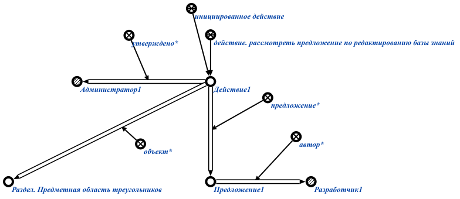

Команда для формирования предложения редактирования конкретного раздела базы знаний предназначена для формирования предложения* об изменении конкретного раздела базы знаний. Первым аргументом команды является знак структуры, описывающий предлагаемое изменение в базе знаний. Вторым аргументом команды является раздел, куда будут применены изменения из предложения после утверждения администратором. Результатом выполнения команды является сформированное предложение* по редактированию базы знаний вместе с разделом, куда будет добавлено данное предложение*. Например:
